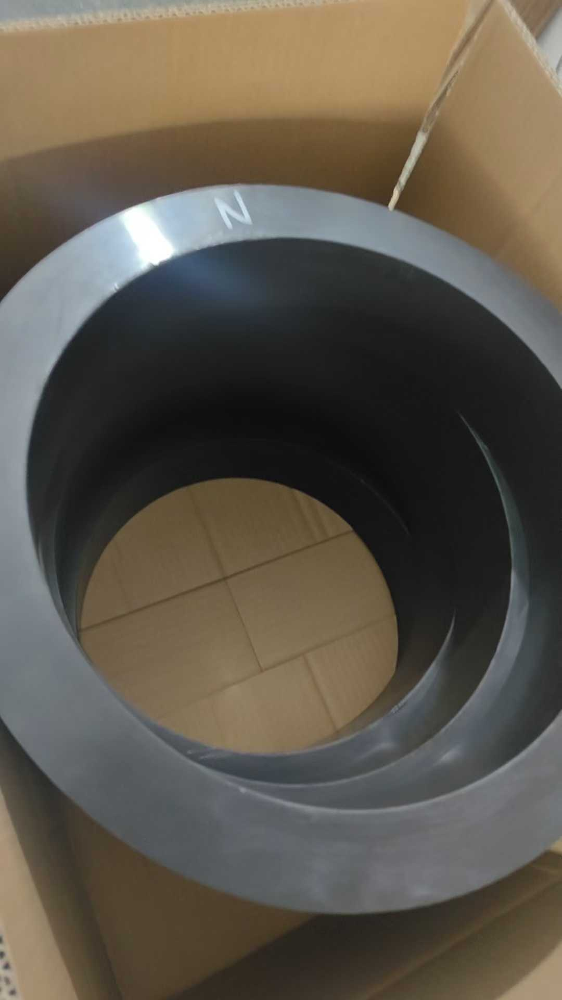

桑德斯与丹佛斯板式换热器：板片、胶垫及新老型号对照大全
桑德斯（Sondex）和丹佛斯（Danfoss）这两个品牌，在板式换热器行业里其实是"一家人"——2016年7月丹佛斯收购了桑德斯全部股份，2018年1月桑德斯正式成为丹佛斯旗下的产品品牌。所以现在市面上既能看到"Sondex S43"的标牌，也能看到"Danfoss SONDEX S43"的标牌，同一台设备、同一套板片胶垫。
这篇文章把两个品牌的型号体系、板片规格和最容易搞混的"新老型号"问题一次讲清楚，重点是帮大家订对配件。
一、先搞清两个品牌的关系
| 时间 | 事件 | 对配件的影响 |
|---|---|---|
| 2016年7月 | 丹佛斯收购桑德斯全部股份 | 型号不变，销售渠道并入丹佛斯 |
| 2018年1月 | 桑德斯成为丹佛斯旗下品牌（SONDEX®） | 铭牌加注Danfoss，型号后缀不变 |
| 至今 | 桑德斯产品线继续生产 | 板片、胶垫、配件完全通用 |
关键结论：老设备铭牌写"Sondex"，新设备写"Danfoss SONDEX"，型号数字相同就是同一台机器，板片胶垫可以互换。真正需要小心的是型号后缀字母（A/B）和版本（Glue/Clip），不是品牌名。
二、桑德斯型号体系
桑德斯的产品线按结构分五大类，比大多数品牌都全：
1. S系列 — 垫片可拆式（主力）
桑德斯最主力的产品线，从S1到S380共上百个型号，交替覆盖0.04~2.01 m²单板面积。完整清单见本文第三节，新老型号对照见第四节。
2. SF系列 — 自由流（宽流道防堵）
SF11A、SF25A、SF53、SF66、SF101、SF123、SF131、SF150、SF160、SF229、SF230
无触点宽流道设计，适合含纤维、颗粒、高粘度介质（造纸、制糖、污水处理、泥浆）。
3. SFD系列 — 造水机/特殊用途
SFD3、SFD5、SFD6、SFD7、SFD13、SFD22、SFD23、SFD35、SFD45、SFD222、SFD245、SFD307/10
船用造水机（淡水蒸馏器）和特殊热工场合专用，是船舶行业最常见的桑德斯板型之一。
4. SW系列 — 半焊接式
SW19A、SW19B、SW26、SW26A、SW40A、SW54、SW59、SW102、SW122、SW189、SW202
制冷剂侧激光焊接、另一侧垫片密封，用于氨系统和热泵，兼顾耐压和安全。
5. SPS系列 — 板壳式
SPS22、SPS72、SPS179、SPS400、SPS646、SPS647、SPS648、SPS1200、SPS1201、SPS1203
全焊接板壳结构，耐高压高温（板侧25bar/壳侧40bar），电厂、化工大型气液换热。
6. 钎焊类：XB、SL、SLS
- XB系列：XB05、XB06、XB12、XB25、XB37、XB52、XB59、XB61、XB66、XB71、XBDW22
- SL系列：SL14、SL32、SL34、SL70、SL78、SL140、SL222、SL333
- SLS系列（半焊）：SLS14、SLS32、SLS34、SLS70、SLS78、SLS140
三、S系列完整型号清单
小规格：S1、S3、S4、S4A、S7、S7A、S8、S8A、S9A、S13、S14、S14A、S15、S16、S16B、S17、S18
中规格：S19、S19A、S20、S20A、S21、S21A、S22、S22A、S23、S30、S31A、S35、S36、S37、S38、S39
大规格：S41、S41A、S42、S42A、S43、S43A、S44A、S47、S47A、S47B、S50、S58、S60、S61、S62、S62B、S63、S64、S65、S67
超大规格：S72、S81、S83、S86、S86B、S100、S100A、S100B、S110、S113、S113G、S120、S121、S130、S145、S152、S155、S187、S188、S201G、S251、S300、S380
四、新老型号到底怎么区分（重点）
这是订配件最容易出错的地方。桑德斯的型号字母后缀不是随便编的：
1. A/B后缀 = 板片改版
同一数字、不同字母，是不同版本的板片。典型的新老对应：
| 老型号 | 新型号 | 说明 |
|---|---|---|
| S4 | S4A | A版改版板片，槽深2.35mm |
| S7 | S7A | 槽深2.6mm |
| S8 | S8A | — |
| S14 | S14A | 槽深2.6mm |
| S16 | S16B | 直接跳到B版 |
| S19 | S19A | 槽深2.3mm |
| S20 | S20A | 槽深2.6mm |
| S21 | S21A | — |
| S22 | S22A | — |
| S41 | S41A | — |
| S42 | S42A | — |
| S43 | S43A | — |
| S47 | S47A / S47B | 两代改版 |
| S62 | S62B | — |
| S86 | S86B | — |
| S100 | S100A / S100B | 两代改版 |
| S113 | S113G | G为粘贴式版本 |
注意：A版和B版的胶垫不通用。S16的胶垫装不上S16B，S47的装不上S47A/S47B。订购前必须看清铭牌上有没有字母。
2. Glue / Clip = 胶垫安装方式
同一型号常有两个版本：
| 版本 | 含义 | 胶垫特点 |
|---|---|---|
| 无标注（常规） | 粘贴式 | 胶垫用胶粘在板片槽内 |
| Glue（如S43-Glue、S65-Glue、S100-Glue、S130-Glue） | 明确标注粘贴式 | 需要涂胶安装 |
| Clip（如S21 Clip、S22 Clip、S35 Clip、S58 Clip） | 卡扣式/免粘式 | 胶垫带卡扣，直接卡进板片，更换快 |
卡扣式胶垫不能用在粘贴式板片上，反之亦然——这是很多船和工程现场换完就漏的根本原因。
3. 后缀"SE"等特殊版本
部分型号带SE（如S21SE、S45SE、S55SE），通常是特殊压力等级或特殊接口配置，订购时必须带上完整后缀。
五、板片规格对照表（选型和替换用）
| 型号 | 槽深(mm) | 角孔(mm) | 孔距(mm) | 外形(mm) | 单板面积(m²) |
|---|---|---|---|---|---|
| S4A | 2.35 | φ28 | 381×70 | 449×140 | 0.04 |
| S7A | 2.6 | φ60 | 394×126 | 498×230 | 0.07 |
| S8A | 2.35 | φ28 | 656×70 | 724×140 | 0.08 |
| S9A | 2.3 | φ66 | 381×192 | 496×306 | 0.09 |
| S14A | 2.6 | φ60 | 694×126 | 798×230 | 0.14 |
| S16B | 2.0 | φ60 | 640×140 | 752×252 | 0.14 |
| S17 | 3.0 | φ69 | 800×150 | 927×274 | 0.17 |
| S19A | 2.3 | φ66 | 701×192 | 816×306 | 0.19 |
| S20A | 2.6 | φ60 | 894×126 | 998×230 | 0.20 |
| S21/S21A | 2.6 | φ100 | 719×225 | 871×380 | 0.21 |
| S22 | 4.0 | φ100 | 719×225 | 882×378 | 0.22 |
| S31A | 2.3 | φ66 | 1050×192 | 1166×306 | 0.31 |
| S37 | 3.5 | φ81 | 1071×238 | 1212×380 | 0.37 |
| S41/S41A | 2.6 | φ147 | 890×296 | 1100×497 | 0.41 |
| S42 | 3.8 | φ147 | 890×296 | 1100×497 | 0.45 |
| S43/S43A | 2.6 | φ202 | 791×395 | 1058×657 | 0.43 |
| S47 | 2.6 | φ100 | 1365×225 | 1518×380 | 0.47 |
| S62 | 2.6 | φ147 | 1292×296 | 1502×500 | 0.62 |
| S63 | 3.8 | φ148 | 1292×296 | 1502×500 | 0.63 |
| S64 | 2.6 | φ100 | 1771×225 | 1924×380 | 0.64 |
| S65 | 2.6 | φ202 | 1091×395 | 1362×659 | 0.65 |
| S81 | 3.5 | φ303 | 1080×480 | 1464×868 | 0.81 |
| S86 | 2.6 | φ147 | 1694×296 | 1904×500 | 0.86 |
| S100 | 2.6 | φ202 | 1489×395 | 1760×659 | 1.00 |
| S110 | 2.6 | φ147 | 2094×296 | 2304×500 | 1.10 |
| S121 | 3.5 | φ303 | 1490×480 | 1874×868 | 1.21 |
| S130 | 2.6 | φ213 | 1891×395 | 2153×657 | 1.30 |
| S188 | 3.5 | φ303 | 2120×480 | 2504×868 | 1.88 |
| S201G | 3.5 | φ482 | 1822×672 | 2400×1242 | 2.01 |

六、丹佛斯自有型号体系
除了继承桑德斯S系列，丹佛斯自有板式换热器主要有三条线：
1. XB系列 — 钎焊板式换热器
XB05、XB06、XB12、XB25、XB37、XB52、XB59、XB61、XB66、XB71、XBDW22（双壁）
铜钎焊、无胶垫、免维护，用于制冷、热泵、区域供热、生活热水。XBDW为双壁型，用于防污染场合。
2. SL / SLS系列 — 大规格钎焊与半焊
- SL（全钎焊）：SL14、SL32、SL34、SL70、SL78、SL140、SL222、SL333
- SLS（半焊）：SLS14、SLS32、SLS34、SLS70、SLS78、SLS140
SL70、SL140、SL222这类大板钎焊机组在区域供热和数据中心冷却里非常常见。
3. MPHE微板式换热器
丹佛斯的Micro Plate Heat Exchanger（微板式），板片更薄、通道更密，同体积换热能力更强，主要用在热泵、制冷和高效机房。
七、板片与胶垫订购要点
- 型号要带全后缀：S43、S43A、S43-Glue是三种不同的板片/胶垫。只报"S43"很可能发错
- 看清Clip还是Glue：卡扣式和粘贴式胶垫不能互换，这是最高频的错误
- 板片材质：常规304/316L，海水用钛，含氯高选SMO 254，腐蚀介质可选哈氏合金
- 胶垫材质：NBR（水、海水、油，-15
120°C）、EPDM（热水、蒸汽、酸碱，-25170°C）、EPDM-HT（高温）、FKM（腐蚀介质，-5~180°C） - 板片厚度：常规0.5mm，低压差大板有0.6/0.7mm版本，替换时要与原件一致
- 老设备先量尺寸：90年代前的桑德斯老机型部分已停产，用量取外形尺寸+孔距+角孔三个数据反查最可靠
八、更换注意事项
- 拆机前记录夹紧尺寸A，换垫后必须压回原值，偏差大则泄漏或压伤板片
- 板片清洗禁用盐酸类强酸，316L会应力腐蚀开裂；用中性或专用清洗剂，软刷单向清洗
- 粘贴式胶垫涂胶薄而均匀，晾至半干再贴，装车前静置固化
- 卡扣式胶垫要卡到位，逐个用手压试，卡扣未入槽运行后必漏
- 板片逐张检查，对着光看针孔，边缘密封区有压痕、裂纹的直接淘汰
- 新旧胶垫不混装，整套更换才能保证压紧均匀
九、总结
三句话记住桑德斯/丹佛斯：
- 品牌是同一家 — 2016年丹佛斯收购桑德斯，型号不变，配件通用
- 字母是版本 — A/B是板片改版，Glue/Clip是胶垫安装方式，胶垫不通用
- 订件报全称 — 型号+后缀+材质+板厚，四样齐全才不会发错
如需桑德斯S系列（S4A~S201G）、SF/SFD/SW/SPS系列以及丹佛斯XB/SL/SLS系列的板片、胶垫和整机配件，泰州日船流体控制科技有限公司备有现货，报上铭牌完整型号即可快速报价。